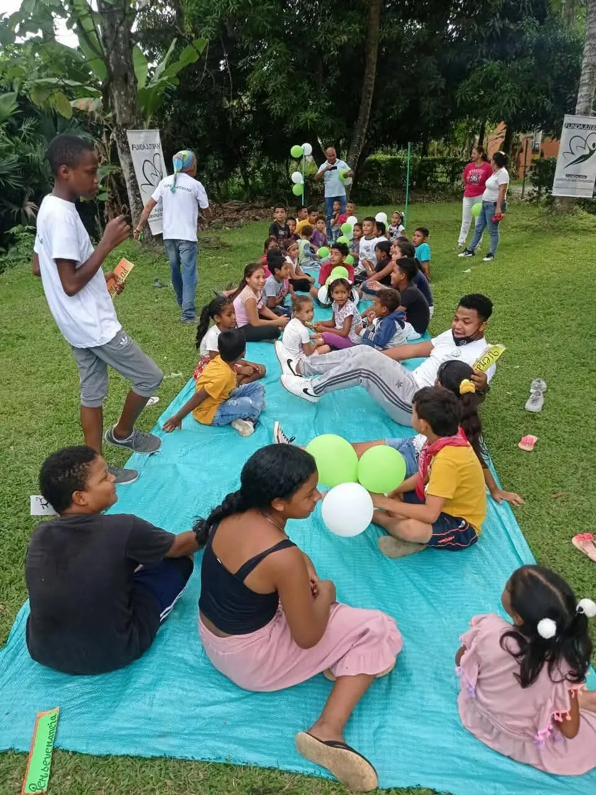
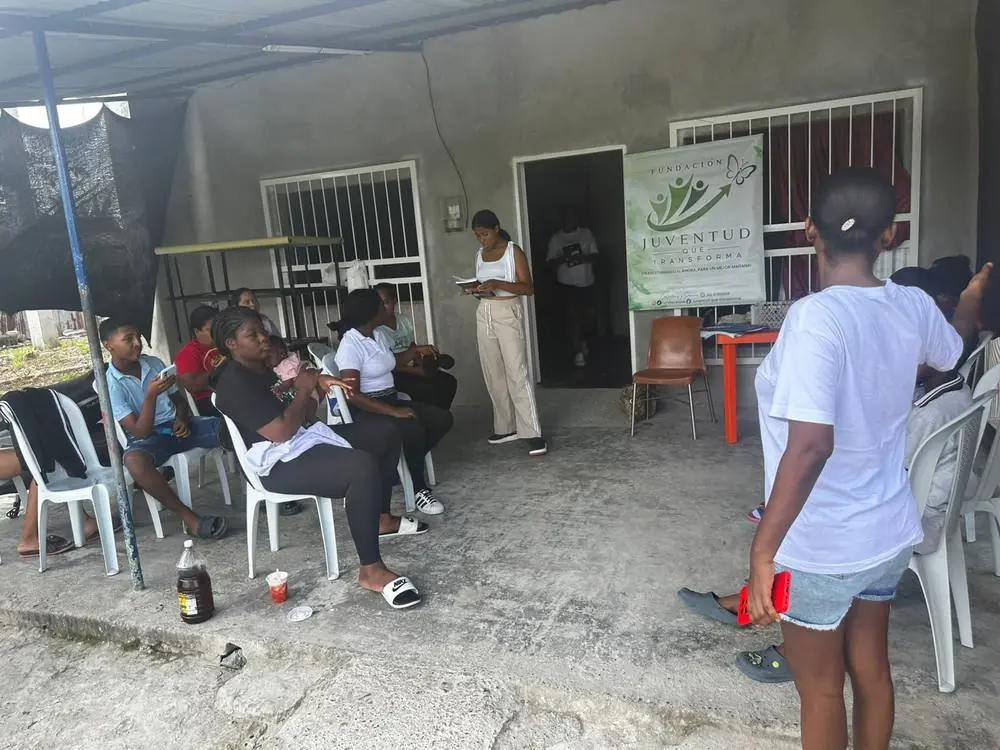
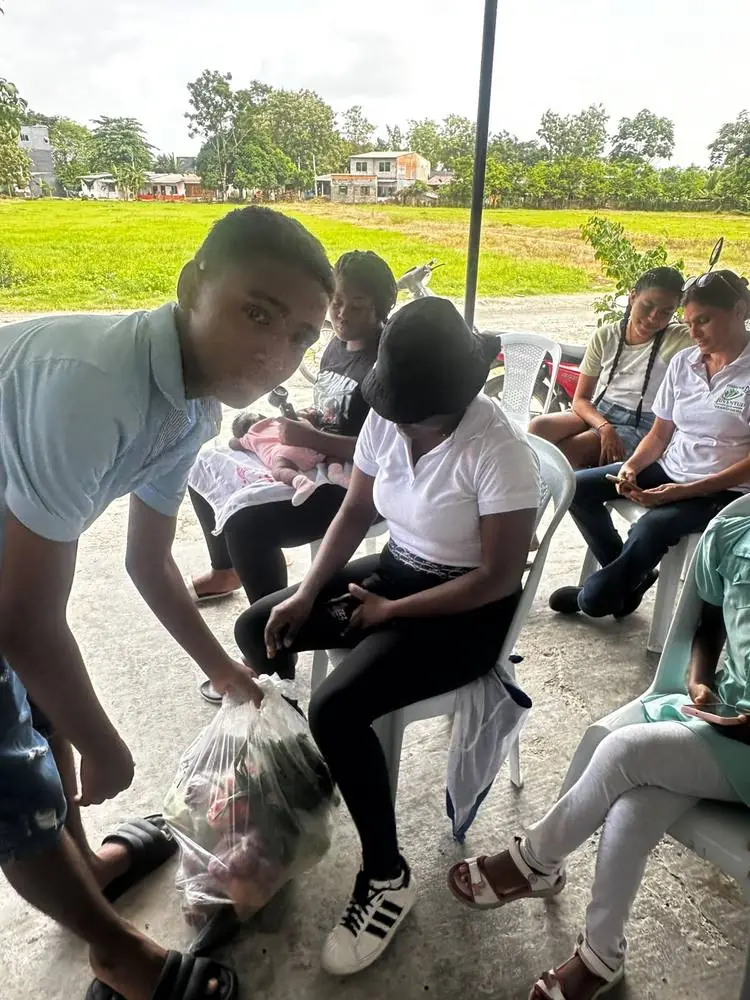
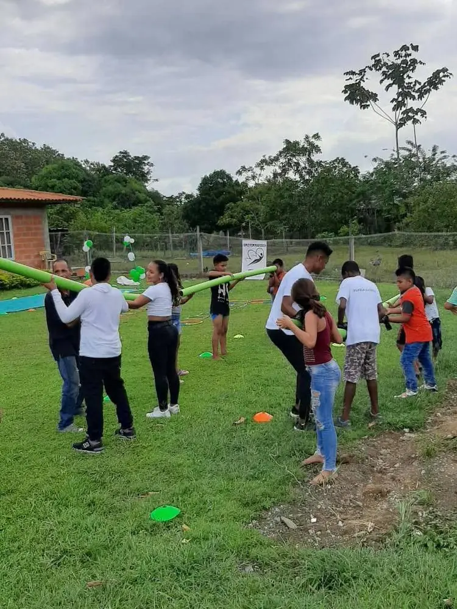
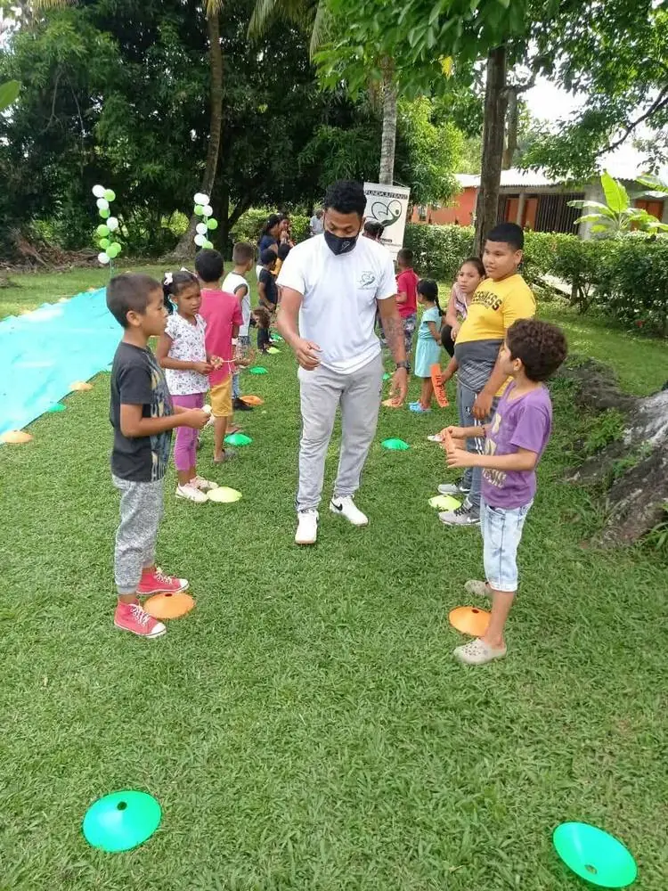
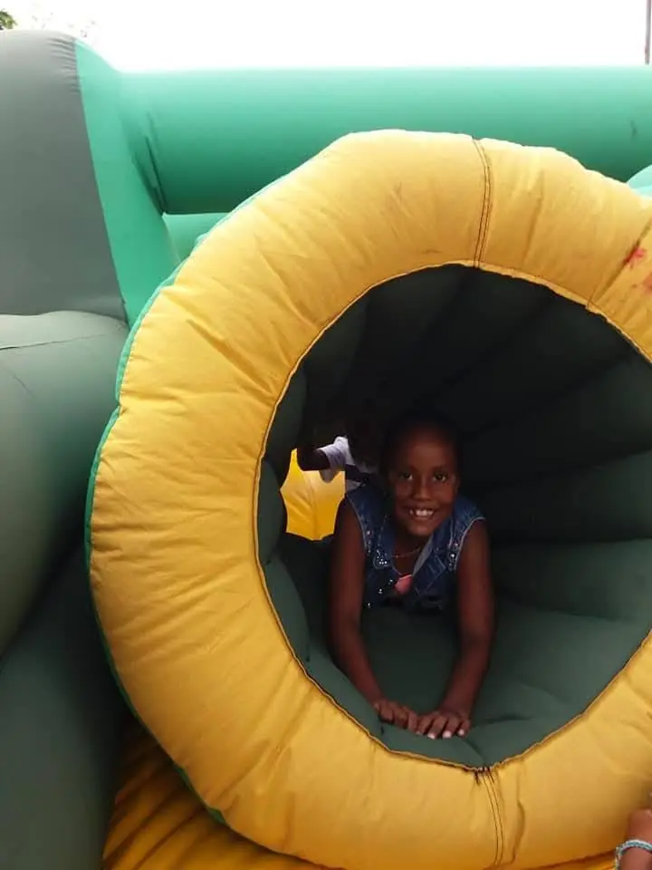

Fundación Juventud que Transforma
Transformando el presente para construir un mejor mañana
Somos una organización sin ánimo de lucro comprometida con mejorar la calidad de vida de niños, niñas, adolescentes, jóvenes y sus familias en Chigorodó y toda la región de Urabá.






Una historia construida junto a nuestra comunidad
Nacimos en 2018 como una organización sin ánimo de lucro comprometida con el desarrollo integral de personas, familias y comunidades, mediante proyectos de intervención social que acompañan de cerca a quienes más lo necesitan.
Misión
Mejorar la calidad de vida de niños, niñas, adolescentes, jóvenes y sus familias en Chigorodó y la región de Urabá, mediante proyectos educativos, sociales, culturales, deportivos y recreativos.
Visión
Ser una organización reconocida a nivel regional por su impacto social y liderazgo comunitario en el Urabá antioqueño.
Lo que guía cada uno de nuestros proyectos
{{ v.name }}
{{ v.desc }}
Resultados construidos junto a nuestra comunidad
Cómo trabajamos por la transformación social
{{ l.name }}
{{ l.desc }}
Historias que ya están transformando vidas
{{ p.name }}
{{ p.desc }}
Un camino respaldado por resultados
{{ g.name }}
{{ g.desc }}
Junta directiva
Equipo de trabajo
Personas que dan su tiempo y su talento para que los proyectos sucedan.
{{ m.desc }}
¿Por qué aliarte con nosotros?
Las empresas que apoyan nuestra labor contribuyen al cumplimiento de los Objetivos de Desarrollo Sostenible y fortalecen su compromiso con la responsabilidad social empresarial.
Súmate a esta transformación
Tu apoyo, grande o pequeño, se convierte en oportunidades reales para niños, jóvenes y familias de Urabá.